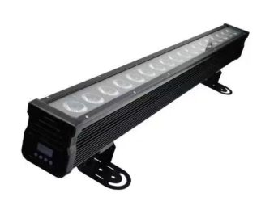

Walk into any lighting showroom — or any rental warehouse — and the inventory divides into three families: fixtures that move, fixtures that sit, and fixtures that sit and splash. Moving heads, LED PARs and wall washers are the workhorses of almost every permanent install and rental inventory on earth, and choosing between them is not about which is "best". It is about matching an optical job to a budget line.
This guide compares the three on the things that actually decide purchases: the physics of what each does, the control data each consumes, the price bands in the current market, and where each one earns its position on a rigging plot. All prices are real EXW figures from our own 2026 catalogue — we manufacture in Guangzhou, so we can show the numbers most resellers hide.
The one-sentence version
A moving head is a precision instrument that puts light somewhere specific, in motion. An LED PAR is a reliable paintbrush that covers a static area with colour. A wall washer is a brick of colour that turns a surface into a feature. Rigs fail when buyers use one of these to do another's job.
Moving heads: paying for direction and motion
A moving head combines a light engine, colour and gobo wheels, and two motorised axes (pan and tilt). You are buying mobility, and that shows in every metric:
- Price. Our current moving head catalogue runs from US$96 for a mini 150W beam (RG-ML150BR-KNNW1H13) to US$757 for full-featured units, with outdoor IP65 wash heads like the RG-ML420WC-KCH93 (7×60W) at US$590.
- Control data. Expect 14–20+ DMX channels per head. Twenty heads can consume an entire universe if you use fine channels and extended modes.
- Maintenance. Moving parts mean moving parts. Yokes, motors and belts are service items; a factory that publishes spare-parts pricing is the only kind worth buying from.
- What you get. Effects no static fixture can produce: mid-air beam shafts in haze, colour changes that travel, gobo textures that sweep a wall.
Buy moving heads when the show needs dynamism — concerts, clubs, television, any event where the lighting itself is part of the entertainment. Do not buy them to simply keep a lobby lit; you would be paying motor prices for a job a static fixture does better.
LED PARs: the reliability layer
The PAR can descends from the PAR-can — a sealed-beam lamp in a cylinder — but the modern LED version is a different animal: a bar or cylinder of high-power RGBW/RGBA LEDs, no lamp changes, modest current draw, near-zero maintenance.
The economics are the story. In our current catalogue of 62 PAR models:
| Price band (EXW) | Number of models |
|---|---|
| Under US$50 | 14 |
| US$50–99 | 31 |
| US$100–199 | 11 |
| US$200+ | 6 |
Nearly three-quarters of the PAR market sits under US$100 per unit. That is why the PAR remains the default answer for stage colour: you can afford layers of it. Six PARs cross-lighting a stage from two positions produce a quality of illumination that no single fixture at any price can match, because good key light is about coverage geometry, not fixture intelligence.
What a PAR cannot do is move, and what it mostly cannot do is shape. There are no gobos, no beam looks, no aerial effects. It is colour coverage, full stop. The modern exception is the pixel-controlled PAR and wash bar — fixtures like the RG-ML240WD-KTXE6AH3 (6×40W zoom, pixel-addressable) blur the line by behaving like a wash fixture that can also run video-style effects up and down the bar.
Wall washers: architecture's favourite fixture
A wall washer is usually a linear IP65 bar — 18 LEDs in a metre-long housing is the classic format — designed to sit at the base of a wall or on structure and throw even colour up (or down) a surface. Where PARs light things in a room, washers turn the room itself into the light.
Current pricing shows the format's efficiency:
- RG-W35TB10-Ke18 — 18×10W RGBW, outdoor — US$58 EXW
- RG-W39TB12-Kg18 — 18×12W 6-in-1 full colour — US$78 EXW
- RG-W38TB30-Ke14 — 14×30W 4-in-1, 1.06-metre body — US$166 EXW
Three things make washers the right tool when they are the right tool. First, weatherproofing is standard: the format lives outdoors permanently, so IP65 is the norm rather than a premium option. Second, coverage per dollar: a US$58 washer paints an entire wall section that would take several PARs to cover evenly. Third, control simplicity: 3–8 DMX channels each in basic mode; a whole façade fits in one universe with room to spare.
The trade-offs are equally clear: fixed aim, no movement, and a look that is entirely about surfaces. Washers light the stage backdrop beautifully; they will never follow a performer.
The comparison table
| Moving head | LED PAR | Wall washer | |
|---|---|---|---|
| Core job | Directed, moving light | Static colour coverage | Surface/structure wash |
| Price band (our catalogue) | US$96–757 | US$50–99 typical | US$58–166 |
| DMX channels (typical) | 14–20+ | 3–8 | 3–8 |
| Moving parts | Pan + tilt motors | None | None |
| Outdoor suitability | Model-dependent (IP65 lines exist) | Indoor typical; outdoor models exist | IP65 standard |
| Best density per rig | 30–50% of the budget | The base layer | Décor and architecture |
A worked example: one ballroom, all three
A 400-guest hotel ballroom, corporate events and weddings, permanent install. The spec that survives ten years of use:
- 8 × moving wash heads (RG-ML760WC-KCH99, 19×40W zoom, IP65, US$560) on the front truss — key light with zoom range to work from any throw, and outdoor-grade sealing because hotel air handling is hostile electronics weather.
- 12 × LED PARs on stage sides and floor pockets — the static colour layer that never needs attention during an event.
- 6 × wall washers (RG-W39TB12-Kg18, US$78) at the room's perimeter columns — the venue sells the room itself as part of every event photo.
Total fixture spend lands around US$6,300 EXW before dimming and distribution. The mix is roughly 90% of the visual result from the correct 50/30/20 split of budget across the three families. Invert the split — all moving heads, no static layer — and you get a rig that dazzles for 90 seconds of the entrance and looks under-lit for the rest of the evening.
The fourth layer: where the line is blurring
Purists will note that the three-family model is under pressure from both directions, and it is worth knowing where the boundaries actually sit in 2026.
Pixel bars and wash bars behave like PARs physically — static, bar-shaped, truss-mounted — but control like moving heads electrically. A fixture such as the RG-ML240WD-KTXE6AH3 (6×40W zoom, per-LED pixel control) consumes channels like an intelligent fixture because it is one: each LED can fire independently, run building effects across the bar, and respond to pixel-mapped content. If your design vocabulary includes "video looks without a video wall," this is the category.
Kinetic lighting removes the motorised head and moves the fixture itself — winch-driven LED balls and tubes that fly in choreographed 3D patterns. It is neither a PAR nor a moving head in any traditional sense, but it earns a mention because buyers who outgrow the three-family model usually outgrow it in this direction first.
The practical advice: treat the three-family model as your budget's skeleton and let these hybrid categories be the accent spend. A rig that is 70% workhorse fixtures and 30% effect fixtures photographs like a rig that cost twice as much; the reverse ratio photographs like a trade show demo.
The decision framework
When specifying, run these four questions in order:
- Does the light need to move during the show? If yes, that portion of the budget is moving heads, full stop.
- Do people or objects need flattering, stable coverage? That is the PAR layer.
- Is there architecture worth selling? Columns, textured walls, façades — washers.
- What does the control budget look like? Remember that every moving head multiplies your channel count and patch time; a properly planned DMX layout is part of the fixture budget, not an afterthought.
One final note from the factory side: the most common over-specification we see is buying moving heads to achieve coverage that a third of the budget in PARs would deliver better. The most common under-specification is hanging beautiful moving heads in a room with unlit walls, so every wide shot shows a black background. Spend in layers — movement, coverage, architecture — and the rig photographs well from every angle.
Ready to price a mixed rig? Send the room dimensions and your event profile through the RFQ form and we will return a three-layer fixture list with current EXW pricing and volume tiers.
Frequently Asked Questions
Which is cheaper per unit: PAR cans or moving heads?
LED PARs. In our catalogue 45 of 62 PAR models cost under US$100 EXW, while compact moving heads start around US$96 and full-featured washes run US$315–590.
Can a wall washer replace moving heads?
No. A wall washer covers a static surface with even colour; a moving head provides direction, movement and mid-air effects. They solve different problems and most complete rigs need both.
What does a wall washer actually mount to?
Floor-set at the base of a wall, or bolted to structure. Outdoor models such as the RG-W38TB30-Ke14 are IP65-rated linear units around one metre long, designed to live permanently in weather.
How many PARs equal one moving wash head?
For pure colour coverage of a stage, roughly three to four PARs cover what one moving wash handles — but the PARs cannot change position, which is exactly what you are paying for in the moving head.
Need help choosing fixtures for your project? Tell us the venue type and room size — we'll spec it for free.
Request a Free Rig Spec →